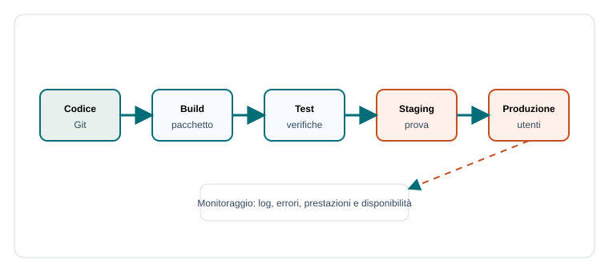

Capitoletto 4
Distribuzione e gestione delle applicazioni
Scrivere il codice non basta: un'applicazione deve essere preparata, configurata, pubblicata, aggiornata e controllata nel tempo. Questa fase trasforma un progetto funzionante in un servizio usabile.
Obiettivi della lezione
- Distinguere sviluppo, test, staging e produzione.
- Capire build, deploy e configurazione.
- Riconoscere il ruolo di log e monitoraggio.
- Comprendere backup, aggiornamenti e rollback.
- Collegare gestione tecnica e continuità del servizio.
Dal codice al servizio
Distribuire un'applicazione significa renderla disponibile nell'ambiente in cui verrà usata. Prima del rilascio bisogna preparare file, dipendenze, database, variabili di configurazione, credenziali e servizi esterni.

Ambienti
Un ambiente è l'insieme di sistema operativo, runtime, librerie, configurazioni e dati in cui l'applicazione viene eseguita. Separare gli ambienti riduce il rischio di provare modifiche direttamente sugli utenti reali.
| Ambiente | Scopo | Dati |
|---|---|---|
| Sviluppo | Scrivere e provare codice. | Fittizi o locali. |
| Test | Verificare funzioni e regressioni. | Controllati. |
| Staging | Simulare la produzione. | Simili ma non sensibili. |
| Produzione | Servire utenti reali. | Reali e protetti. |
Build e dipendenze
La build prepara l'applicazione per l'esecuzione o la pubblicazione: compila, ottimizza, copia risorse, installa dipendenze e produce un pacchetto. Le dipendenze sono librerie, runtime e servizi necessari al funzionamento.
Codice sorgente
dipendenze dichiarate
configurazione dell'ambiente
build
pacchetto pronto per il deployConfigurazione
La configurazione cambia tra ambienti: indirizzo del database, chiavi API, modalità debug, URL del servizio email. Questi valori non dovrebbero essere scritti direttamente nel codice, soprattutto se sono segreti.
Deploy e rollback
Il deploy pubblica una nuova versione. Prima del deploy si eseguono controlli; dopo il deploy si verifica che il servizio risponda. Il rollback è il ritorno a una versione precedente quando la nuova introduce problemi gravi.
| Fase | Domanda | Esempio |
|---|---|---|
| Pre-deploy | I test passano? | Test automatici e controllo configurazione. |
| Deploy | La nuova versione è pubblicata? | Upload o rilascio su server. |
| Post-deploy | Il servizio funziona? | Controllo pagina, login, API principali. |
| Rollback | Serve tornare indietro? | Ripristino della versione precedente. |
Log e monitoraggio
I log registrano eventi importanti: avvio, errori, accessi, richieste, tempi di risposta. Il monitoraggio osserva lo stato del servizio: disponibilità, prestazioni, uso di CPU, memoria, disco e rete.
- Un log aiuta a capire che cosa è successo.
- Un allarme avvisa quando qualcosa non funziona.
- Una metrica mostra l'andamento nel tempo.
- Un controllo di salute verifica se il servizio risponde.
Backup e continuità
Un sistema reale deve prevedere guasti. Il backup salva copie dei dati; il ripristino verifica che quelle copie possano essere usate. La continuità del servizio richiede piani per aggiornamenti, errori, incidenti e perdita di dati.
| Misura | Serve a | Nota |
|---|---|---|
| Backup | Conservare copie dei dati. | Va testato, non solo creato. |
| Monitoraggio | Scoprire problemi in tempo. | Riduce tempi di intervento. |
| Rollback | Rimediare a un rilascio difettoso. | Richiede versioni tracciate. |
| Documentazione | Rendere ripetibili le procedure. | Aiuta team e manutenzione. |
Esempio guidato
Per pubblicare una web app della biblioteca: si aggiorna il codice su Git, si esegue la build, si provano ricerca e prestito in staging, si configura il database di produzione, si pubblica, poi si controllano log e metriche nelle prime ore.
Esercizi guidati
- Elenca le configurazioni che cambiano tra sviluppo e produzione.
- Scrivi una checklist minima prima del deploy di un registro prestiti.
- Spiega perché un backup non testato non basta.
- Descrivi quando useresti un rollback.
Domande con risposta semplice
Che cos'è il deploy?
È la pubblicazione di una versione dell'applicazione in un ambiente in cui può essere usata.
A che cosa servono i log?
Servono a ricostruire eventi, errori e comportamenti del sistema durante l'esecuzione.
Perché separare staging e produzione?
Per provare una versione in un ambiente simile a quello reale senza rischiare subito sui dati e sugli utenti veri.
Per ripassare
Gestire un'applicazione significa seguirla nel tempo: preparazione, configurazione, rilascio, controllo, backup e aggiornamento continuo.